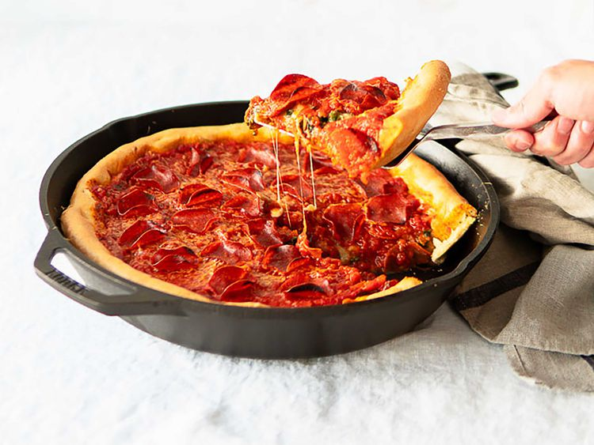

Lasagna

Summary
It's a buttery, flaky crust that's achieved by using corn oil (not butter) and minimal mixing and kneading times.
The pizza itself is built with cheese, toppings, and sauce, in that order.
- Dry Yeast
- White Sugar
- Warm Water
- All-purpose flour
- Corn oil
- Kosher salt
- Butter
Steps
- Cook the meat
- Cook the noodles
- Make the cheese layer
- Assemble the lasagna
- Bake the lasagna
Home